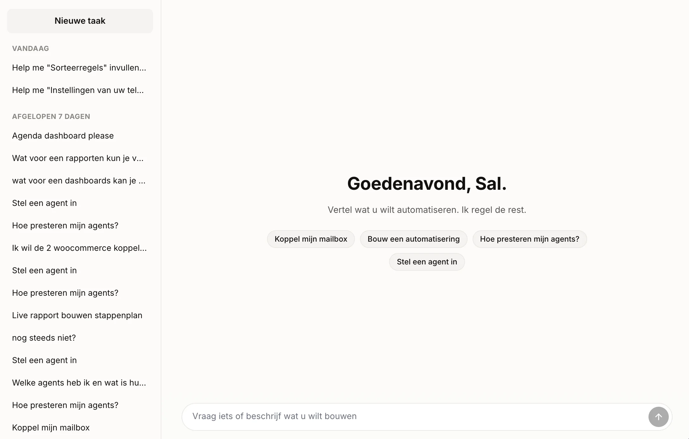
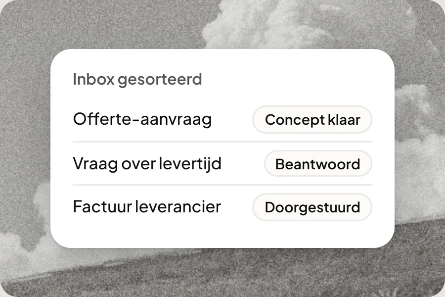
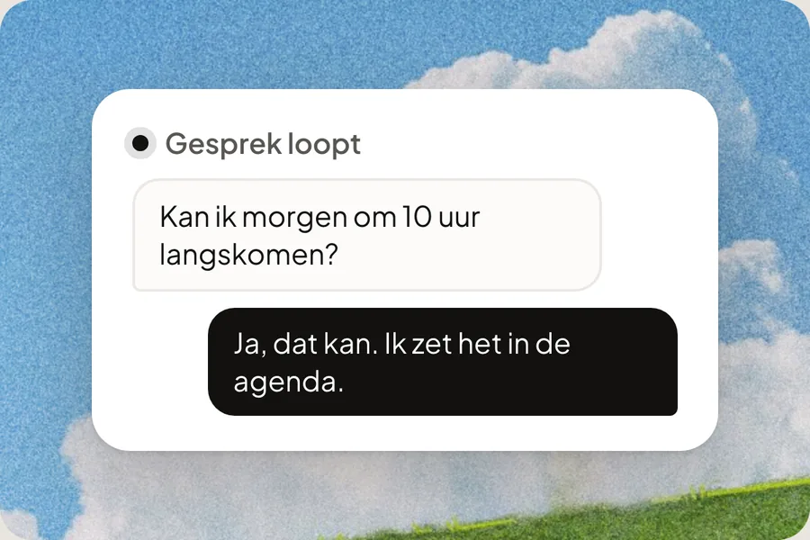
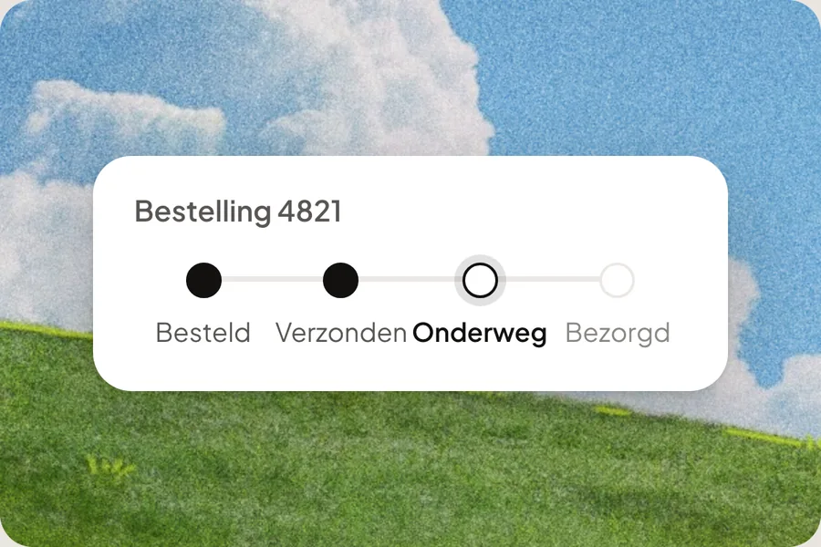
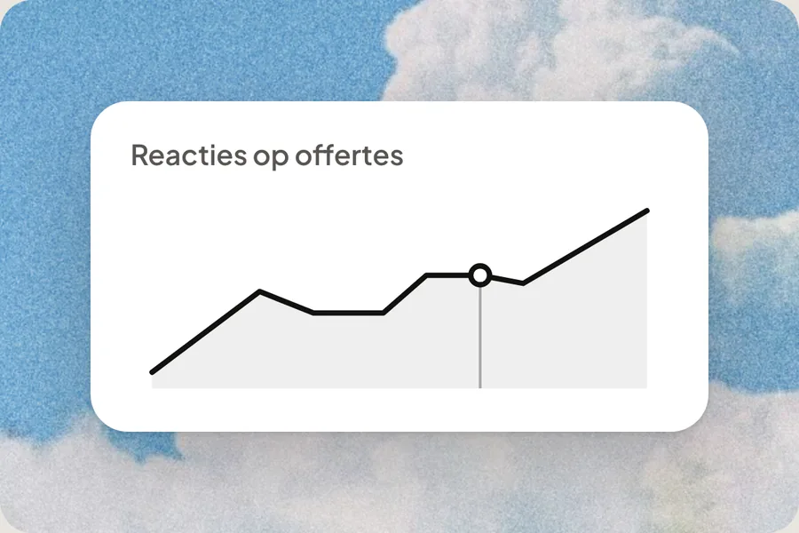
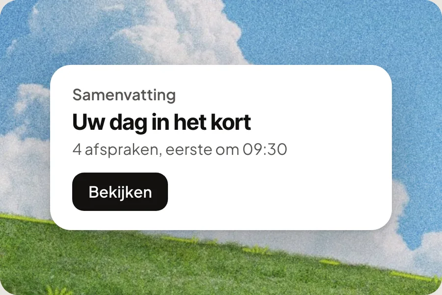
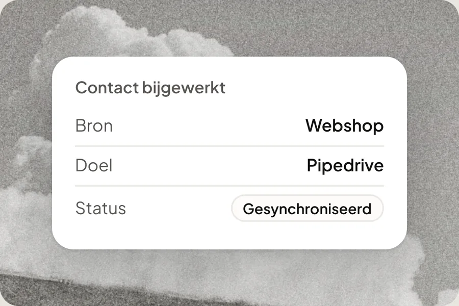
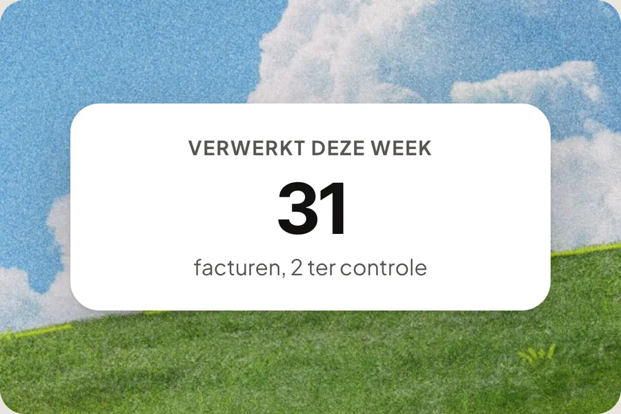
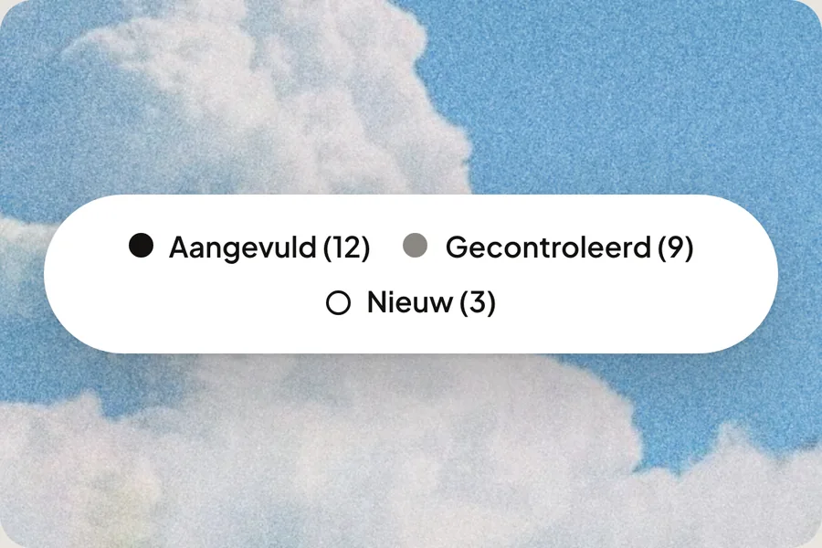
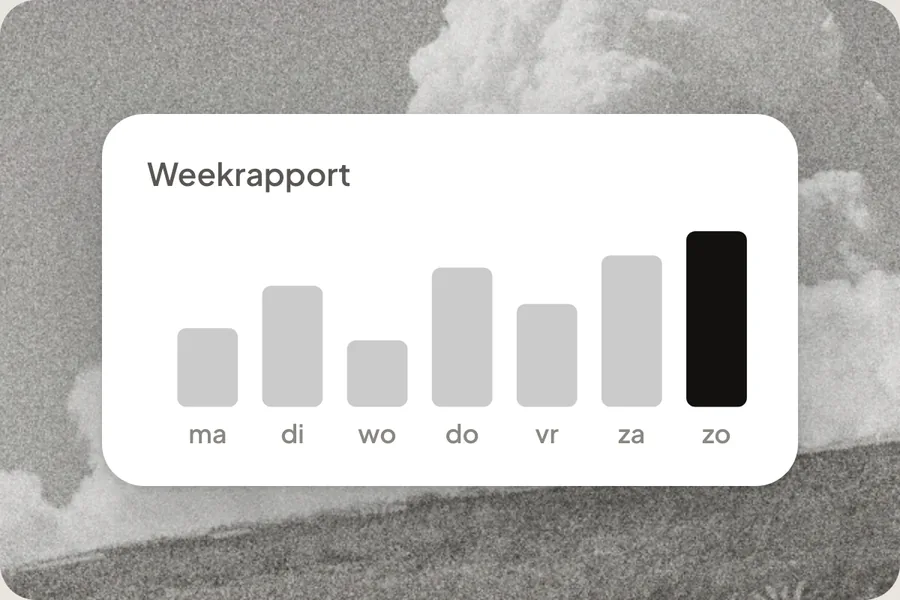

Deploy Agents.
Workflows. Dashboards.
Geen inbox die overloopt. Geen gemiste oproep. Geen order die u zelf opzoekt. Zeg in gewone taal wat er moet gebeuren. Mowi bouwt het, test het en zet het live na uw akkoord. Vandaag gratis te proberen.

Koppelt met wat u al gebruikt


Mowi werkt onder meer samen met WooCommerce, Shopify, Lightspeed, Shopware, Magento, Mijnwebwinkel, bol.com, PrestaShop, Exact, Twinfield, Moneybird, AFAS, Odoo, HubSpot, Pipedrive, Google Agenda, Microsoft Bookings, Calendly, Salonized, Formitable, Guestplan, TheFork, Cubilis en SiteMinder.
Workflows in minuten
Geen twee bedrijven werken hetzelfde. Mowi past elke workflow aan op hoe u nu werkt — zonder apart maatwerktraject.

Inbox agent
Sorteert en beantwoordt uw e-mail.
Telefonie
Voice agent
Neemt uw telefoon op.
Orders
Orderstatus
Zoekt bestellingen op in uw webshop.
Offertes
Offerte-opvolging
Herinnert klanten die niet reageren.
Agenda
Agenda-samenvatting
Vat uw agenda dagelijks samen.
CRM & data
CRM-synchronisatie
Houdt uw CRM up-to-date.
Facturen
Factuurverwerking
Leest facturen en bonnetjes zonder vaste sjablonen.
Leads
Lead-verrijking
Vult nieuwe leads automatisch aan.
Rapportages
Rapportgenerator
Maakt op een vast moment een rapport uit uw data.
BoekhoudingAutomatisch boeken
Stelt de juiste boeking voor met een zekerheidsscore.
BankBankmatching
Koppelt banktransacties aan openstaande posten.
VraagpostenVraagposten
Vraagt uw klant automatisch om wat ontbreekt.
Eén platform voor alles wat terugkomt
Mail en telefoon op één plek
De agent leest mee en sorteert wat binnenkomt. Het antwoord staat klaar als concept. U kijkt het na en verstuurt.
Start gratisAntwoord uit uw eigen webshop
Iemand vraagt waar zijn bestelling blijft. De agent kijkt in uw webshop en geeft de status door. U zoekt niets meer op.
Start gratisAanvragen die compleet binnenkomen
De agent controleert een aanvraag op wat ontbreekt. Mist er iets, dan vraagt hij het direct na. U begint aan de offerte met alles bij de hand.
Start gratisAfspraken zonder heen en weer
De agent kijkt in uw agenda en stelt een moment voor dat past. Bevestigen en verzetten loopt via dezelfde agent.
Start gratisUw boekhouding sluit aan
Mowi koppelt met Exact Online, Moneybird en meer. Wat de agent daaruit mag lezen of doen, bepaalt u vooraf.
Start gratis GDPR
GDPR
In voorbereiding
In voorbereiding
Beveiliging die u kunt controleren
Alle verbindingen lopen versleuteld. De agent verstuurt niets zonder uw akkoord. En u ziet precies welke partijen wij inschakelen.
Meer over beveiliging →